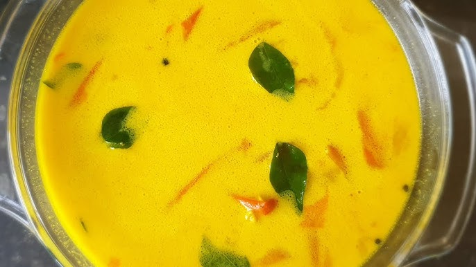

Chicken White Sodhi Curry

Description
A basic white curry, this dish takes very little time to make but explodes with flavors. It is highly recommended that you use whole spices rather than ground unless otherwise noted - it will make a world of difference in the final taste. Note: recipe from Rambutan by Cynthia Shanmugalingam.
Ingredients
- 400g skinless chicken drumsticks
- 1/2 tsp cumin seeds
- 1/2 tsp coriander seeds
- 1 tsp salt
- 1/2 tsp ground turmeric
- 3 garlic cloves, peeled and halved
- 4cm fresh root ginger, peeled
- 1/2 red onion, finely sliced
- 4 green chillies, slit lengthways
- 10 fresh curry leaves
- Optional: 5cm piece of pandan leaf
- 200 ml coconut milk
- 1/2 lime
- pepper to taste
Steps
- Put chicken, cumin, coriander, salt, turmeric, garlic, and ginger in a large saucepan, cover with water, and bring to a boil, then simmer cover with a lid and simmer for 30 minutes
- Add onion, green chillies, curry leaves, and pandan leaf, if using, and simmer for 10-15 minutes
- Stir in coconut milk and bring to a rolling boil, then remove chicken pieces and set aside
- Simmer sauce for 10 minutes or until slightly thickend
- Add chicken back in and serve with pepper and a squeeze of lime